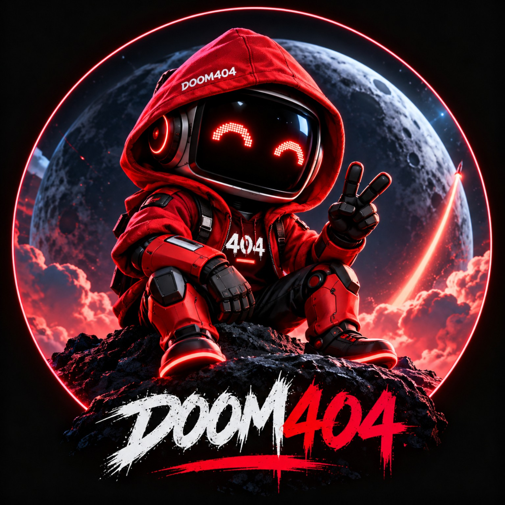

DOOM AI
The operating and intelligence interface for DOOM404 knowledge, proposals, GLITCH reports and ecosystem navigation.
DOOM404 is an experimental community ecosystem built around a simple loop: identify meaningful GLITCHES, debate them, and build useful fixes.

Crypto generates enormous amounts of data, discussion and attention. Useful knowledge is often fragmented, contribution is hard to measure, and hype can outrun utility.
DOOM404 explores whether a community can turn those gaps into practical tools without pretending every idea is already a finished product.
The operating and intelligence interface for DOOM404 knowledge, proposals, GLITCH reports and ecosystem navigation.
Structured diagnostic indicators across selected on-chain, project and community signals.
Turns useful observations, research and discussion into structured, searchable knowledge.
Recognizes meaningful contribution — building, research, creation, moderation and problem-solving.
Explores compliant digital representations of defined business interests, rights or assets. Feasibility and compliance come first.
Status labels describe the current development position — not guarantees of future delivery.
Website, Litepaper, GitHub and community presence.
Development gate: $10M plus readiness checks.
Development gate: $25M plus readiness checks.
Development gate: $50M plus readiness checks.
Development gate: $100M plus readiness checks.
$250M gate supports feasibility work only.
Market-cap figures are internal development signals — not price targets, forecasts, available funding or automatic launch triggers. Sustained conditions, community demand, funding, security, resources and legal feasibility matter.
Different ideas. Different communities. Different experiments. One expanding universe built around a common instinct: find the GLITCH, question the default, build the next experiment.
ENTER THE 404 UNIVERSE →No official DOOM404 contract address has been issued.
Read. Question. Challenge. Contribute.
$DOOM404 is an experimental crypto community token project. The DOOM404 token has not yet launched. Nothing on this site is investment, financial, legal or tax advice. No token value, utility development, liquidity, listing, return, market capitalization or project success is guaranteed. Participants in crypto assets may lose the entire amount committed. Verify official links, wallet addresses and contract information independently.